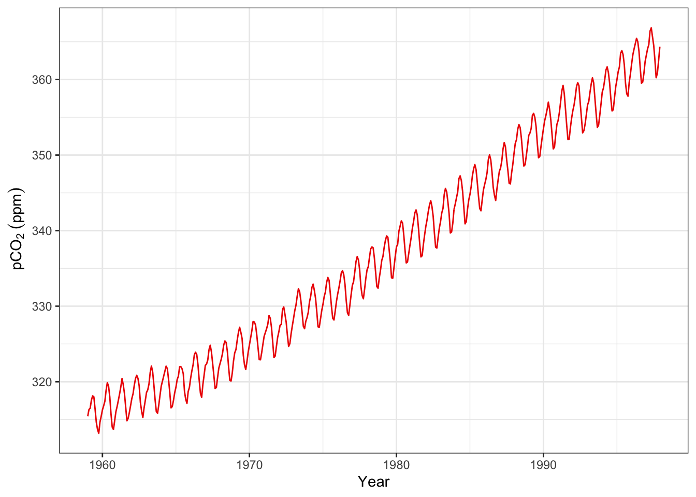

Chapter 2 缺失值（NA）和无穷大（Inf）
实验数据经常会有缺失值，缺失值的处理对于数据分析非常重要。 .pull-left[
v0 <- c(1, 3, 4, NA) #第4个数缺失
v0## [1] 1 3 4 NAis.na(v0) #判断是否有缺失值## [1] FALSE FALSE FALSE TRUEv0[is.na(v0)] <- 0 #将缺失值替换为0
v0## [1] 1 3 4 0logv0 <- log(v0) #对数据进行自然对数转化，产生了负无穷大值（-Inf）
logv0## [1] 0.000000 1.098612 1.386294 -Infis.infinite(logv0) # 检查是否有无穷大，包括Inf和-Inf## [1] FALSE FALSE FALSE TRUElogv0[is.infinite(logv0)] <- NA #将无穷大替换为缺失值NA
logv0## [1] 0.000000 1.098612 1.386294 NA2.1 向量（vector）
2.1.0.1 用函数c( )生成向量
“c”的含义: 1. combine
2. concatenate [kɒn’kætɪneɪt] vt.把 （一系列事件、事情等）联系起来
- 数值向量
v1 <- c(1.4, 3, 10.9, -7)
v1## [1] 1.4 3.0 10.9 -7.0- 字符向量
v2 <- c("apple","organge","banana")
v2## [1] "apple" "organge" "banana"- 逻辑值向量
v3 <- c(TRUE,FALSE,TRUE,FALSE)
v3## [1] TRUE FALSE TRUE FALSE2.1.1 用 seq()生成等差序列
seq(from = 10, to = 100, by = 10) ## [1] 10 20 30 40 50 60 70 80 90 100from是第一个值，to是最后一个值，by是相邻两个数的间隔值。
可以简略成(默认第1个数赋给from，第2个数赋给to，第3个数赋给by) :
seq(10, 100, 10)## [1] 10 20 30 40 50 60 70 80 90 100####怎么使用seq()函数？–查看帮助信息。
执行代码?seq， 你会在Help栏看到如下信息:
Usage
seq(…)
Default S3 method:
seq(from = 1, to = 1, by = ((to - from)/(length.out - 1)), length.out = NULL, along.with = NULL, …)
耐心读一读，你可以看懂。
####读懂之后，你还可以这么使用seq()：
seq(10, 100, length.out = 19)## [1] 10 15 20 25 30 35 40 45 50 55 60 65 70 75 80 85 90 95 100length.out是数列的长度
v2 <- seq(10, 100, length.out = 19)
v2[12]## [1] 652.1.2 用:符号生成连续自然数序列
1:10## [1] 1 2 3 4 5 6 7 8 9 10v3 <- 20:30
v3## [1] 20 21 22 23 24 25 26 27 28 29 30

2.2 ggplot作图
先对ggplot绘图有个简单印象，下次课我们深入学习。
library(ggplot2) #ggplot绘图
ggplot(d_CO2, aes(time, CO2))+
theme_bw()+
geom_line(color = "red2")+
labs(x = "Year",
y = ~pCO[2]~(ppm))## Don't know how to automatically pick scale for object of type ts. Defaulting to continuous.
## Don't know how to automatically pick scale for object of type ts. Defaulting to continuous.
#ggsave("pCO2.png", width=342/90, height=243/90, dpi=600)2.4 保存图片
2.4.1 第二种方法
由于我们以后大多使用ggplot()作图，因此可以用ggplot2程序包中的ggsave()函数保存当前显示的图片（在RStudio右下面板中）。
library(ggplot2)
ggplot(mpg, aes(displ, hwy))+
geom_point()
ggsave("myplot_2.png", width=359/90, height=239/90, dpi=600) #png格式，位图
ggsave("myplot_2.pdf", width=359/90, height=239/90) #pdf格式，矢量图完成以上操作，你就能在工作文件夹里找到名称为“myplot_2.png”“myplot_2.pdf”的图了。
如何设置合适的
width和height?
需要一些技巧（我会操作演示）和审美能力。